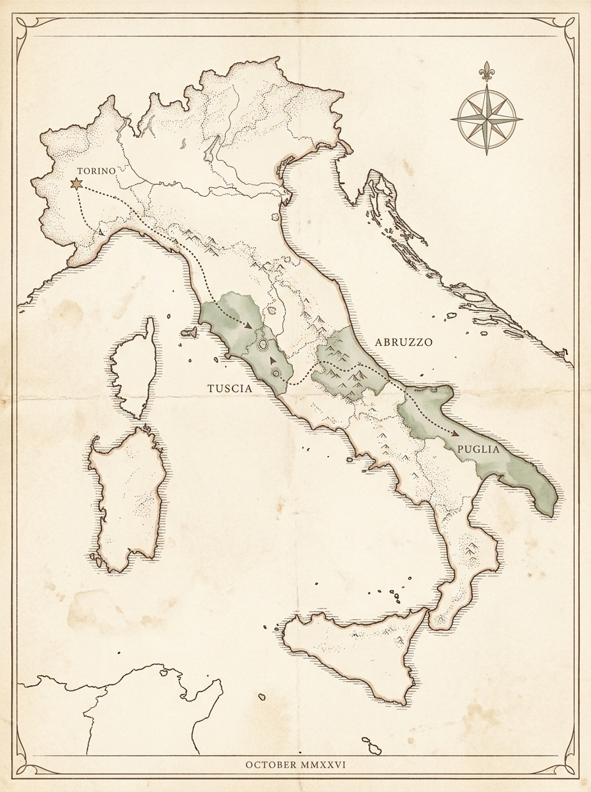
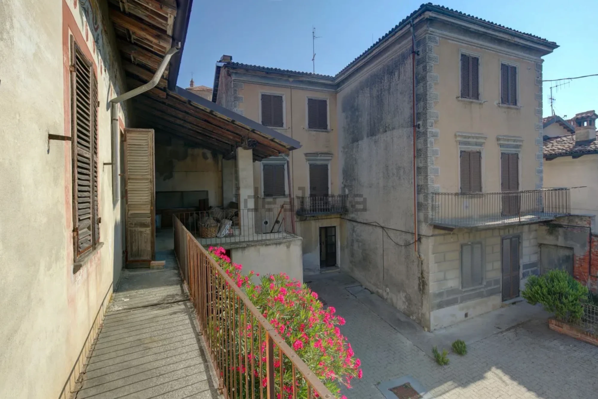
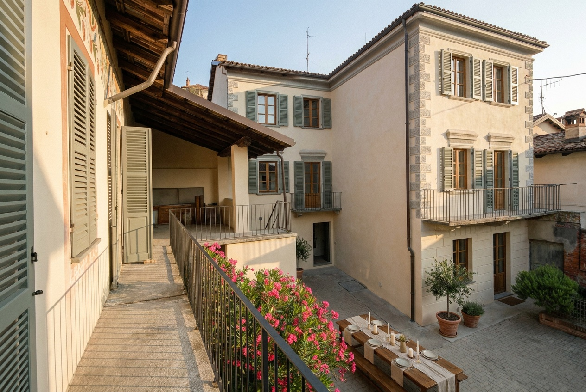

One arc, three regions, ten days. Anchored to Wave in Torino; ending where the first residency is most likely to happen.
Wave. The reason the flight is already booked. From here, the rental car heads south.
Two or three borghi around the lake. Test the "accessible from the world" thesis: Fiumicino is 90 minutes away. Anchor visit: the town houses at ~700 €/m².
The best substance-to-price ratio in Italy, and a comune (Penne) that is openly courting co-living projects. One meeting with the town hall if it can be arranged.
The favourite. Walk the known towns again with new eyes, and visit two or three masserie available for seasonal rental — the venue of the 2028 test residency.
The scenography already exists: white stone, working piazzas, a live expat and premium-tourism scene that validates willingness to pay. A masseria is the natural first campus — kitchen, courtyard, rooms, land, one gate.
Risk: the window is closing here first; Itria valley prices climb fastest in the region.
"Most beautiful villages" network member with a municipal revival plan that names social cohousing as a goal — the strongest potential municipal ally on the list. Mountains and sea within half an hour.
Risk: seismic zone — structural due diligence is non-negotiable; weaker winter access.
The best option if global accessibility decides: investors and members land in Rome and arrive before dinner. Lazio prestige without Tuscany prices, and a lake that makes summer effortless.
Risk: less international buzz than Puglia — the story must do more of the work.
The cheapest supply in the country and mature 1 € machinery — but distance from hubs makes it a second-location candidate for the network, not the prototype. Entire hamlets for sale are the literal Phase III map; watch, don't buy.
Score every village 1–5 on eight questions. Ask them standing in the piazza, not at a desk.
Stand in the piazza at seven in the evening, midweek. Empty square but a living bar — that is the profile: partly emptied, still breathing.
Walk from the piazza to the edge of town. Does everything a life needs fit inside the circle?
Is there one space — courtyard, cloister, sala — where twenty people can eat at one table tonight, not after renovation?
Run a speed test in the centro storico. Mornings belong to deep work with AI; 10 Mbit is a dealbreaker.
Mention twenty residents, workshops, a restored building. Watch the reaction: is the town hall an ally or a queue?
Talk to three people under forty who never left. If nobody under forty stayed, the village can host a retreat — not a life.
Count listable houses within the walking circle: is there room for phase II and III without bidding wars?
The unfair question: does it make you want to stay tonight? The brief's test — "I've been looking for this my whole life" — applies to the founder first.
Non-repayable grant for tourism, artisan and cultural projects in Ministry of Culture–designated borghi. The Post-AI Society fits the call almost literally — residencies, workshops, cultural programme.
For under-40s moving to villages below 2,000 residents and starting a business. Not the target region for phase I, but a template for what regions will pay for repopulation.
Purchase-and-renovation grants with residency obligations — again a template; several regions copy the mechanism year by year.
Symbolic price, real renovation obligations. Useful less for the euro and more for what it signals: a comune that wants exactly this kind of project.
Ten days, two deliverables. Everything else is a bonus.
One masseria or agriturismo with a written rental offer for two weeks in 2028 — the venue of the test residency. And one conversation with one sindaco who smiled at the idea.
Not a promise — an inspiration. What our renovation could mean on a real candidate building. Drag the line.


Lime-washed plaster, restored frescoed frieze, shutters in muted sage, ironwork renewed, blocked windows reopened — and one long table with linen and candles in the courtyard, because that is the point of the whole exercise. Restraint over spectacle: nothing added that the building did not already ask for.
Inspiration study — concept visualisation on a listed property (Monferrato candidate). Internal moodboard, not a design.